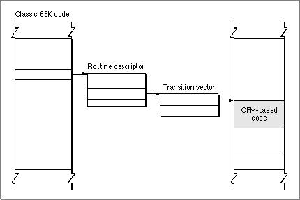

Legacy Document
Important: The information in this document is obsolete and should not be used for new development.
Important: The information in this document is obsolete and should not be used for new development.


Classic 68K Code Originates the Call
If classic 68K code initiates the call, then the calling routine is not required to take any action; it is never even aware that a mode switch might be necessary.The calling routine must always pass a universal procedure pointer. If the called routine is also classic 68K code, the universal procedure pointer is simply a classic 68K pointer (that is, a pointer to the called routine). The Mixed Mode Manager is never invoked, and the call proceeds normally.
If the called routine is CFM-based code, the universal procedure pointer cannot be a classic 68K pointer; it must therefore be a pointer to a routine descriptor. The classic 68K caller is not required to change, so the supplier of the CFM-based routine must provide the routine descriptor.
The first instruction in the routine descriptor is an A-line instruction that invokes the Mixed Mode Manager. The Mixed Mode Manager handles the mode switch using the information stored in the routine descriptor and then calls the transition vector of the CFM-based code. Figure 6-1 shows the calling path from the classic 68K code to the CFM-based code.
- Note
- The routine descriptor is not part of the called routine. Rather, it is a shell or wrapper through which all external calls to the routine must pass.

Figure 6-1 Calling path from classic 68K code to a CFM-based routine

After the call any return values are passed back to the classic 68K caller.
In order to satisfy the agreement to always pass universal procedure pointers, you must create routine descriptors for any CFM-based routines that may be called by classic 68K code. For example, if you supply a callback routine, you must take additional steps to anticipate a possible mode switch when the callback occurs. A classic 68K runtime function call such as
AEInstallEventHandler (kCoreEventClass, kAEOpenApplication, HandleOapp,0,false);must be changed to
UniversalProcPtr myHandleOappProc; myHandleOappProc = NewAEEventHandlerProc (HandleOapp); AEInstallEventHandler (kCoreEventClass,kAEOpenApplication, myHandleOappProc,0,false)TheNewAEEventHandlerProcmacro (defined inAppleEvents.h) calls the Mixed Mode Manager'sNewRoutineDescriptorfunction to create a routine descriptor forHandleOapp.
- Note
- In certain cases where you cannot modify the CFM-based code (if it is a third-party library whose source code is unavailable, for example), it is possible to construct routine descriptors in your classic 68K code.